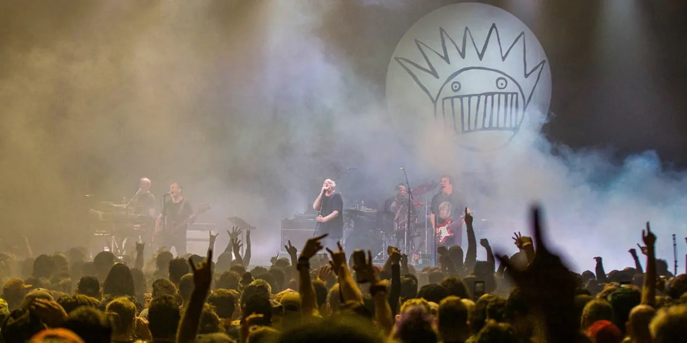
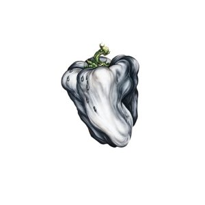
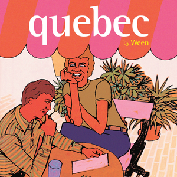
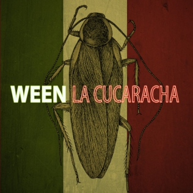
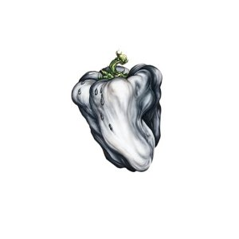
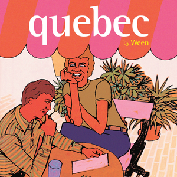
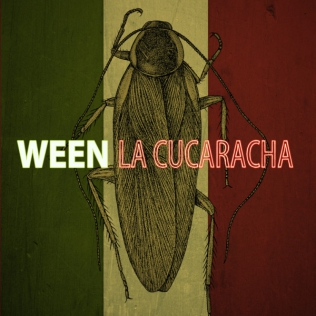

{What Deaner was Talking} About
“If I was king, I'd wear a ring, and never hurt my people. I'd stay alert, and dressed to kill. I might even slip you something.”
Ween
Ween were the ultimate band of the alternative rock era, a talented and deliriously odd duo whose work traveled far beyond the constraints of parody and novelty into the heart of surrealist ecstasy. Fueled by psychedelic mushrooms and a craving for hot meals, Ween created their own self-contained universe, a parallel dimension where the only sacred cow was their own demon god, the Boognish.
The duo formed in New Hope, Pennsylvania in 1984, when the then 14 year olds cut the first of thousands of home recordings. In 1990, Ween released their debut double album GodWeenSatan: The Oneness, a sprawling release that careened from hardcore to helium pop to Prince-Xeroxed funk. 1991's The Pod was another masterpiece of dementia recorded under the influence of Scotchgard.
Discography
 





Join the Conversation